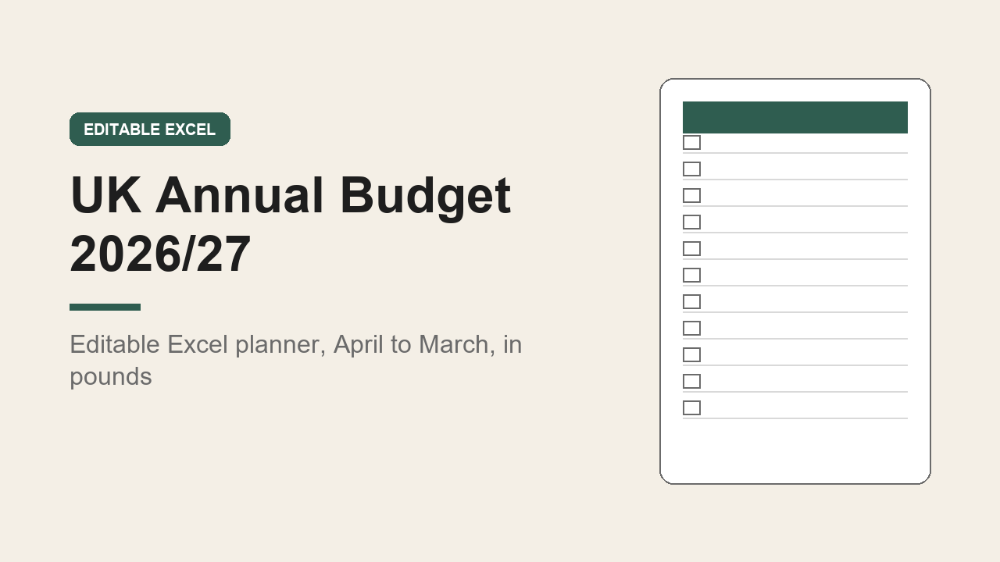

UK Annual Budget Spreadsheet 2026/27, Excel, April to March, GBP
GBP 9.00 · instant digital download

A full year household budget built for the UK tax year, 6 April 2026 to 5 April 2027.
Pounds throughout, UK spelling and UK bills such as council tax, TV licence, vehicle tax, MOT, Child Benefit and Universal Credit.
What you get: one editable Excel workbook (.xlsx) with 19 sheets.
1.
Start here: step by step instructions.
2.
Settings: rename or add income types and up to 40 spending categories, and every sheet updates.
3.
Income: list your pay and other income, weekly, fortnightly, four-weekly or monthly, with monthly averages worked out for you.
4.
Bills: 40 rows for regular bills, including council tax on 10 or 12 instalments, with yearly and monthly costs calculated.
5.
Plan: a planned amount for every category in every month, filled in from your bills and easy to change for months that differ.
6.
Twelve monthly sheets, April 2026 to March 2027: planned vs actual for every category, plus a 200 row spending log that totals itself by category.
7.
Savings: 20 savings pots with targets, monthly payments, progress, and an ISA allowance check against the 20,000 pound limit.
8.
Annual Summary: every month side by side, a chart, and planned vs actual per category for the year.
Worked examples show how each sheet is used.
Set up to print on A4.
Works in Excel, and opens in Google Sheets and Numbers.
This is a digital download, nothing is posted.
It is a planning and record keeping tool, not financial advice..
What happens after you buy
Payment and delivery are handled by Gumroad. You get the download straight after paying, and a copy of the link by email. Nothing is posted to you.
Tags: uk budget spreadsheet, annual budget, budget planner, excel template, household budget, money tracker, tax year 2026, personal finance, savings tracker, uk budget